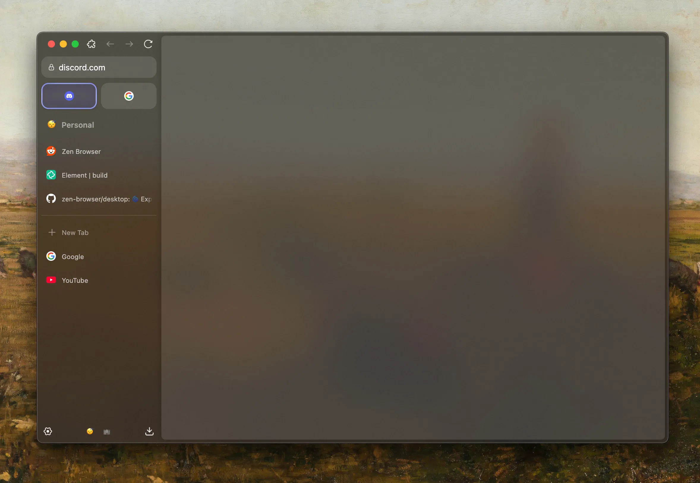

There was a time when the internet felt different—when it wasn’t a maze
of dark patterns designed to manipulate your attention, when software
was built for the user, not for the highest bidder. Back then, a browser
was simply a tool, a window to the world, not a marketplace disguised as
an app.
Somewhere along the way, that changed.
Today, browsers are riddled with engagement traps. They
track you, sell your data, shove crypto schemes in your face, and call
it ‘innovation.’ But real innovation isn’t about bloated AI assistants
or endless monetization tricks. Real innovation makes life simpler, not
more exhausting.
I built Zen because I believe the browser should serve you. It should be
fast, transparent, and private by design—not as a checkbox feature, but
as a philosophy. It should get out of your way, so you can get in, do
what you need to do, and step away from the screen without feeling
drained.
I’m not a corporation. I don’t have a marketing team
crafting sleek slogans, nor a boardroom plotting engagement metrics. I’m
just a developer who saw what was wrong and decided to fix it. Zen isn’t
about gimmicks. It’s about respect—for your time, your privacy, and your
right to a better web.
It won’t be perfect, and I won’t
pretend to have all the answers. But with the help of a passionate
community, I know we can build something that matters. A browser that
doesn’t fight against you, but works with you.
There was a browser that kind of did this — Arc.
For a while, it felt like a breath of fresh air: a browser that
challenged conventions, that cared about design, that aimed to make
browsing feel intentional rather than chaotic. It rethought the
interface, introduced thoughtful features, and for a moment, it seemed
like someone finally got it.
But then, things changed.
The Browser Company, Arc's VC-backed creators, became ambitious, and they decided that their loyal user-base still fell short of their goals to compete with the big names like Chrome, right from the start. Thus, they announced that Arc was "good enough" and went off to work on a new AI-powered browser.
Yet, it wasn't. The Windows version was a shadow of what was promised—slow, unstable, missing core features. The MacOS version was in a better state, but performance and stability gradually degraded with every update. What started as a vision for a better browser quickly became yet another company chasing after monetization, pivoting to AI gimmicks and engagement loops instead of refining the core experience. Thus, Arc was finished, before it had even reached its real potential.
I won’t pretend Arc didn’t inspire me. It did. There’s a lot to admire
in its design philosophy, in its willingness to rethink how we interact
with the web. But inspiration isn’t imitation. I’m taking the
good—thoughtful UX, a clean interface, a focus on user control—and
cutting out the bad. No forced online accounts. No feature bloat
disguised as innovation. No chasing trends just to stay relevant.
Zen
isn’t about maximizing engagement. It’s about minimizing friction. It’s
about building a browser that works with you, not on you. And beyond
that, I’m exploring my own ideas—rethinking not just how a browser
looks, but how it feels to use. How it fits into your life without
demanding more of your attention than necessary. While it's still in
early development, I'm excited to share it with you, and to hear your
thoughts on how we can make it better together.
So, what's the plan?
Zen is still in its early stages, but it’s growing fast. I’m
working on a roadmap that focuses on the essentials: mantain firefox updated
and secure to gain trust, improve the UI/UX to make it more intuitive and enjoyable, and
implement features that make your life easier, not more complicated.
Arc's Basic Features
Expand on our own interesting ideas
Final touches, polishing and rebrand for stable release
The future of Zen isn’t set in stone. It’s a work in progress, shaped by
your feedback, your ideas, and your needs. I’m not building this browser
for me. I’m building it for you—for all of us who believe the web can be
better, who want to take back control of our digital lives, and who
refuse to settle for the status quo.
If you’re tired of
browsers that treat you like a product, if you’re looking for a
different way to browse, if you believe in a web that respects your
privacy and your time, then I invite you to join me on this journey. Let’s
build something that matters. Let’s build a browser that respects you.
I also want to invite you to contribute, if you have any ideas, suggestions
or want to help in any way, feel free to let us know. Some zen features where completely
community driven, implemented by external contributors. We are always looking for
new ideas and ways to improve the browser.
The internet deserves better.
So do you.